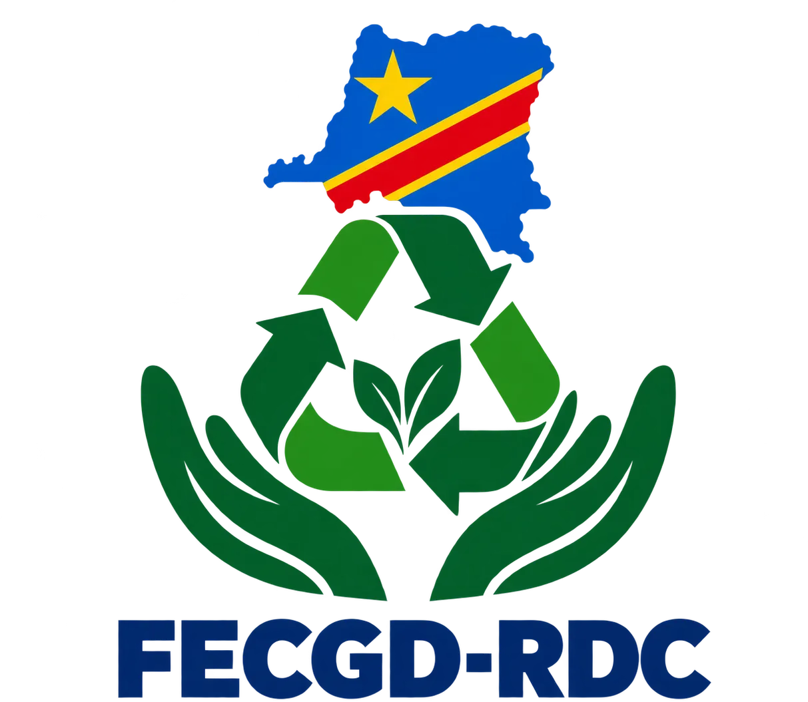

01
Collecte des déchets
Le premier geste d’une filière responsable : rassembler les déchets et les orienter vers les circuits de gestion adaptés.
FÉDÉRER. TRANSFORMER. PRÉSERVER.
Rassembler les acteurs de la collecte, de la gestion et de la valorisation des déchets pour un Congo plus propre et un avenir plus durable.
Une terre à préserver.
Un avenir à construire ensemble.

LA FÉDÉRATION
Fédération des entreprises de collecte, de gestion et de valorisation des déchets de la République démocratique du Congo.
La FECGD-RDC porte une conviction : les déchets méritent une nouvelle perspective. En réunissant les entreprises de la filière, elle inscrit la collecte, la gestion et la valorisation dans une démarche commune.
Au cœur de cette vocation : faire du lien entre les acteurs et placer la préservation de notre environnement au centre de l’action.
Ce qui nous rassembleNOS DOMAINES D’ACTION
Trois maillons d’une même chaîne,
pour repenser le cycle de vie des déchets.
Le premier geste d’une filière responsable : rassembler les déchets et les orienter vers les circuits de gestion adaptés.
Organiser le tri et la prise en charge des déchets pour mieux maîtriser leur parcours et limiter leur impact sur l’environnement.
Donner une seconde vie aux matières, encourager leur réutilisation et faire progresser une économie plus circulaire.
NOTRE ENGAGEMENT
La propreté de nos villes et la préservation de nos ressources sont une responsabilité partagée.
Une vision commune pour les entreprises qui font vivre la filière des déchets.
Placer le tri, la gestion responsable et la valorisation au cœur de la démarche.
Inscrire chaque action dans une perspective de respect de l’environnement et des générations futures.
UNE AMBITION QUI NOUS RASSEMBLE
Entreprises de la filière, acteurs locaux et citoyens :
chacun a un rôle dans l’avenir de nos déchets.